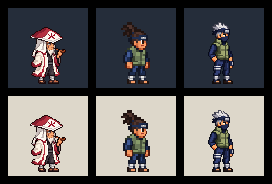
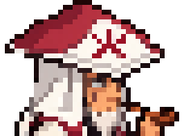

Comparison order: Hiruzen, approved Iruka, Kakashi. Each row uses a dark or light background. The first comparison is displayed at actual game size.


Candidate only. No animation or in-game replacement is included.